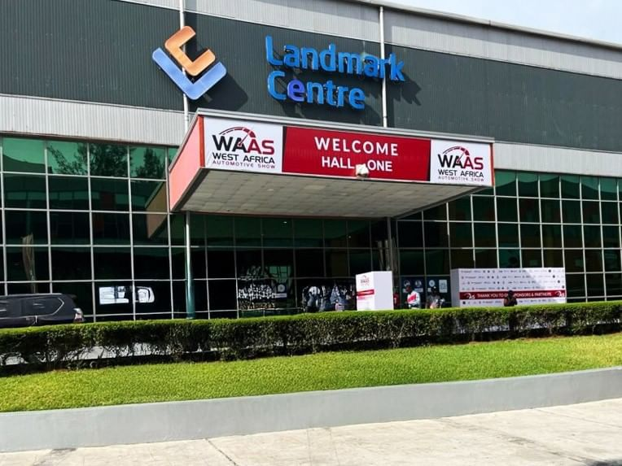
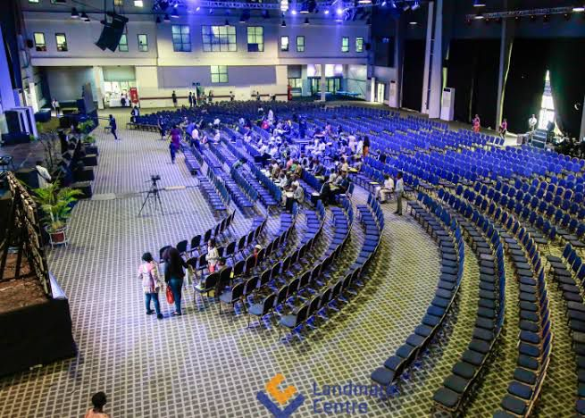
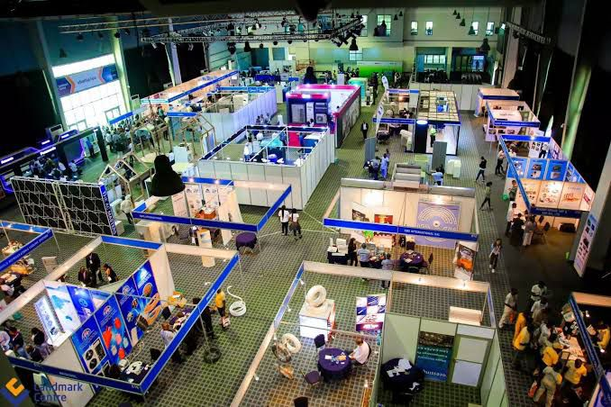

Conference Venue
Landmark Centre, Victoria Island, Lagos
NaijaDevs 2026 will take place at the Landmark Centre — one of Lagos's premier event and entertainment destinations, situated along the Lagos waterfront in Victoria Island. The venue offers world-class facilities, fast Wi-Fi, ample parking, and yes — an amazing view of the Atlantic Ocean.
Landmark CentreWater Corporation Drive,
Off Ligali Ayorinde,
Victoria Island, Lagos,
Nigeria.
+234 1 234 567 890
venue@naijadevs.ng
Find Us on the Map
Landmark Centre is located on Water Corporation Drive, Victoria Island, Lagos:
Venue Photos
A look at what to expect when you arrive:



Watch the 2025 Highlights
Missed last year? Here's what you're signing up for:
Welcome Message from Our Founder
Hear a personal welcome from Chidi Nwosu, Founder of NaijaDevs Community:
Venue Amenities
- Wi-Fi
-
High-speed fibre internet throughout the venue. Dedicated developer network available —
150 Mbps symmetric, unthrottled. Network name:
NaijaDevs2026 - Parking
- 500 parking spaces available on-site at no additional charge for conference attendees. Enter via Gate 2 (Water Corporation Drive).
- Capacity
- Main Hall: 800 seated • Innovation Hub: 300 seated • Outdoor Lounge: 400 standing. Total capacity: ~1,500.
- Accessibility
- The venue is fully wheelchair accessible. Accessible parking bays are available near the main entrance. Hearing loop systems are installed in the Main Hall. Contact access@naijadevs.ng for specific needs.
- Catering
- All tickets include breakfast, lunch, and afternoon snacks on all three days. Vegetarian and vegan options available. Nigerian classics on the menu every day.
- Prayer Room
- Quiet multi-faith prayer room available on Level 2. Open all day.
- First Aid
- Medical team on standby at the information desk. Located near the main entrance.
- Nursing Room
- A private, comfortable nursing room is available for mothers. Ask at the info desk.
Getting Here
Expand each section for travel details:
Flying into Lagos
Lagos is served by Murtala Muhammed International Airport (LOS) in Ikeja, which is approximately 45–90 minutes from Landmark Centre depending on traffic.
Domestic travellers can fly into Lagos from Abuja, Port Harcourt, Kano, and other cities via Air Peace, Arik Air, Ibom Air, and others. Book early — September is a busy travel period.
From the airport, take a ride-hailing app (Bolt or Uber) directly to "Landmark Centre, Victoria Island." Expect to pay between ₦5,000 and ₦12,000 depending on traffic.
Hotels Nearby
We have negotiated special rates with partner hotels for NaijaDevs 2026 attendees:
- Eko Hotels & Suites — 5-star, 10 min drive. Quote "NaijaDevs2026" for 15% discount.
- Radisson Blu Anchorage Hotel — 5-star, 5 min drive. Quote "NaijaDevs2026" for 20% discount.
- The Wheatbaker Hotel — 4-star, Ikoyi. 15 min drive.
- Hotel Bon Voyage — Budget-friendly, Victoria Island. Walking distance from venue.
Book via hotels@naijadevs.ng for confirmed partner rates.
Getting Around Lagos
Bolt and Uber are the most reliable ways to get around Lagos. They are available 24/7 and work well across the island.
BRT buses operate along major corridors but are not recommended for first-time visitors due to complexity. The Lagos Ferry from Marina to VI is a scenic and often faster option if you are staying on the mainland.
Pro tip: Add "Landmark Centre, Water Corporation Drive, VI" into your Bolt app the night before so you're not typing it in Lagos traffic.
Health & Safety Guidelines
NaijaDevs 2026 is committed to the health and safety of all attendees. We will follow all NCDC guidelines in place at the time of the conference.
- Hand sanitiser stations will be available throughout the venue.
- Masks will be available at the registration desk for those who want them.
- Any attendee who feels unwell should not attend. No questions asked — refunds available.
Accessibility
We are committed to making NaijaDevs an inclusive event for everyone. See our amenities list above for details, or contact us at access@naijadevs.ng with any specific requirements.
Directions from Major Lagos Locations
| Starting Point | Route | Distance | By Car (Light Traffic) | By Car (Heavy Traffic) |
|---|---|---|---|---|
| Murtala Int'l Airport, Ikeja | Airport Road → 3rd Mainland Bridge → VI | ~35 km | 45 min | 90–120 min |
| Ikeja (City Centre) | Lagos-Abeokuta Expressway → 3rd Mainland → VI | ~30 km | 40 min | 90 min |
| Lekki Phase 1 | Lekki-Epe Expressway → Ozumba Mbadiwe → VI | ~14 km | 20 min | 60 min |
| Yaba (Mainland) | Carter Bridge → Marina → VI | ~12 km | 25 min | 75 min |
| Ikoyi | Bourdillon → Ozumba Mbadiwe → VI | ~5 km | 10 min | 30 min |
| Ajah | Lekki-Epe Expressway → VI | ~30 km | 35 min | 90 min |
| Lagos traffic is unpredictable. Always allow extra time. We recommend arriving at least 30 minutes early. | ||||